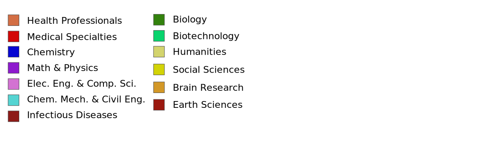

<DOCTYPE! html>

<head>
    <meta charset=UTF-8 />
    <link rel='shortcut icon' type='image/x-icon' href='images/favicon.ico' />
    <title>Science Map</title>
    <script src="lib/angular/angular.js"></script>
    <link rel="stylesheet" href="css/bootstrap.min.css">
    <script src="lib/head.js"></script>
    <script src="src/Init.js"></script>

    <script src="lib/jquery.min.js"></script>
    <script src="lib/bootstrap.min.js"></script>
    <style type="text/css">

        body{
             font-family: 'Open Sans', sans-serif !important;
        }
    
        .legend-item-1 {
            width: 150px !important;
        }

        .legend-item-2 {
            width: 650px !important;
        }

        .legend-item-label {
            text-align: left;
        }

        .legend-row {
            width: 510px;
        }
        
        a.disabled {
   pointer-events: none;
   cursor: default;
   color:black;
}

    .wvf-label {
    font-size: 16px;
    font-weight: 600;
}

.modal-header-info {
    color:#fff;
    padding:9px 15px;
    border-bottom:1px solid #eee;
    background-color: #5bc0de;
    -webkit-border-top-left-radius: 5px;
    -webkit-border-top-right-radius: 5px;
    -moz-border-radius-topleft: 5px;
    -moz-border-radius-topright: 5px;
     border-top-left-radius: 5px;
     border-top-right-radius: 5px;
}

.modal-dialog{
    position: relative;
    top:90px;
    overflow-y: hidden;
}  
    </style>

</head>

<body id="sciMapBody">
    <div class="container-fluid">
       <!-- Trigger the modal with a button -->
       <div ng-include="'partials/scimap_usage_modal.html'"></div>
       <button type="button" class="btn btn-info btn-s" data-toggle="modal" data-target="#scimapUsageModal" id="scimapUsage">  <span class="glyphicon glyphicon-info-sign"></span> Usage</button>
       <div flex layout-fill layout="row" >
        <div flex layout="column">
            <div ng-include="'partials/scimap-popup.html'"></div>
            <div layout="column" layout-fill class="wrapper" ng-controller="ngCnsVisual" ng-reset-on-resize ng-data-attr="ng-cns-visual" ng-config="visuals/scimap01-config.js" ng-vis-type="MapOfScience" id="scimap01" ng-data-field="nanohub" ng-identifier="scimap01">
            </div>

            <div class="scimap-legend">
                <button>
                    <span>Legend</span>
                </button>
                <div class="scimap-legend-row">
                    <div flex layout="row" layout-wrap>
                        <div flex="32" layout="column" style="margin-top: 6px; margin-left: 10px;">
                            <div class="legend-item-label">Nodes</div>
                            <div>
                                <div flex class="legend-item-1">
                                    <div ng-controller="ngCnsVisual" ng-data-attr="ng-cns-visual" ng-vis-type="LegendNodeSize" id="nodeSize" ng-identifier="nodeSize">
                                    </div>
                                </div>
                            </div>
                        </div>
                        <div flex="65" layout="column">
                            <div class="legend-item-label" id ="edges">Disciplines</div>
                            <div> 
                                <div class="legend-item-2">
                                 
                        </div>
                    </div>
                </div>

            </div>

        </div>
    </div>
</div>
</div>

<button type="button" class="btn btn-secondary btn-s" id="backgroundChange" onclick="changeBackgroundColor();">B/W</button><br><br>
<!-- <button type="button" class="btn btn-primary btn-s" id="downloadSVG">Download SVG</button> -->
<div ng-include="'partials/scimap_about_modal.html'"></div>
<button type="button" class="btn btn-primary btn-s" data-toggle="modal" data-target="#scimapAboutModal" id="scimapAbout"> <span class="glyphicon glyphicon-question-sign"></span> About</button>
</div>
</body>
<script>
    var legendToggleOff = true;
    $(".test-bug").css("display","none");
    setTimeout(function() {
        $(document).ready(function() {
            $(".scimap-legend").click(function() {
                toggleLegend();
            });
        });
    }, 2000)

    function toggleLegend() {
        if (legendToggleOff) {
            $(".scimap-legend").animate({
                bottom: '0px'
            }, 60);
            legendToggleOff = false;
       $(".test-bug").css("display","block");

        } else {
            $(".scimap-legend").animate({
                bottom: '-196px'
            }, 60);
            legendToggleOff = true;
           $(".test-bug").css("display","none");
        }

    }

    function changeBackgroundColor(){
        var current = document.body.style.backgroundColor;
        console.log(current);
        if (current == 'white' || current == '')
        {
            document.body.style.backgroundColor = '#282823';
            document.getElementById("zoom-text").style.fill="white";
            subd_labels_arr = document.getElementsByClassName("subd_label");
            for(x=0;x<subd_labels_arr.length;x++){
                subd_labels_arr[x].style.fill="white";
            }
        }
        if (current == "rgb(40, 40, 35)" ) {
            document.body.style.backgroundColor = 'white';
            document.getElementById("zoom-text").style.fill="black";
        subd_labels_arr = document.getElementsByClassName("subd_label");

            for(x=0;x<subd_labels_arr.length;x++){

                subd_labels_arr[x].style.fill="black";

            }}
    }


window.addEventListener('load', () => {
    const bundle = bundleCss();

    document.getElementById('downloadSVG').addEventListener('click', () => {
        bundle.then((stylesheet) => {
            const doc = document.getElementsByTagName('svg')[0].outerHTML
                // add in the styles, and also set the xmlns, which is mandatory to get things to show the svg "stand-alone"
                .replace(/<svg(.*?>)/, '<svg xmlns="http://www.w3.org/2000/svg" $1\n<style>/* <![CDATA[ */\n' + stylesheet + '\n/* ]]> */</style>');

            const link = document.createElement('a');
            link.href = 'data:image/xml+svg;base64,' + btoa(doc);
            link.download = 'scimapViz.svg';
            document.body.appendChild(link);
            link.click();
            document.body.removeChild(link);
        });
    });
});


// make a big <style> tag representing the page context for downloaded svg
function bundleCss() {
    return new Promise((resolve, reject) => {
        xhr('GET', 'src/Init.js')
            .then((res) => {
                // wait for all xhr
                Promise.all(
                    // get a list of all the stylesheets referenced by angular.
                    // (this might just need to be [ 'css/svg.css' ])
                    res.response.match(/[^\s"']+[.]css/g).filter((ma) => { return ma.indexOf('/') > -1; })
                        // fetch content
                        .map((url) => { return xhr('GET', url); })
                // xhr responses
                ).then((stylesheets) => {
                    // concatenate into a giant stylesheet
                    resolve(stylesheets.map((ss) => { return unicodeEscape(ss.response); }).join('\n'));
                });
            }, console.error);
    });
}

// not sure how angular does this, but you can use its mechanism instead
function xhr(method, url, opts) {
    if (!opts) {
        opts = {};
    }
    return new Promise((resolve, reject) => {
        const req = new XMLHttpRequest;
        req.open(method, url);
        if (opts.headers) {
            Object.keys(opts.headers).forEach((k) => {
                req.setRequestHeader(k, opts.headers[k]);
            });
        }
        req.send(opts.body);
        req.onreadystatechange = () => {
            if (req.readyState === 4) {
                if (req.status >= 200 && req.status < 300) {
                    resolve(req);
                }
                else {
                    reject(req);
                }
            }
        };
    });
};

// shout out somebody on stackoverflow. some of the stylesheets are non-ascii
function padWithLeadingZeros(string) {
    return new Array(5 - string.length).join("0") + string;
}
function unicodeCharEscape(charCode) {
    return "\\u" + padWithLeadingZeros(charCode.toString(16));
}
function unicodeEscape(string) {
    return string.split("")
                 .map(function (char) {
                     var charCode = char.charCodeAt(0);
                     return charCode > 127 ? unicodeCharEscape(charCode) : char;
                 })
                 .join("");
}

</script>

</html>
